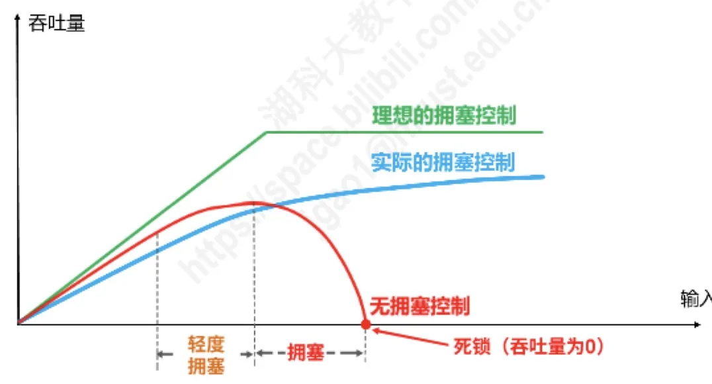
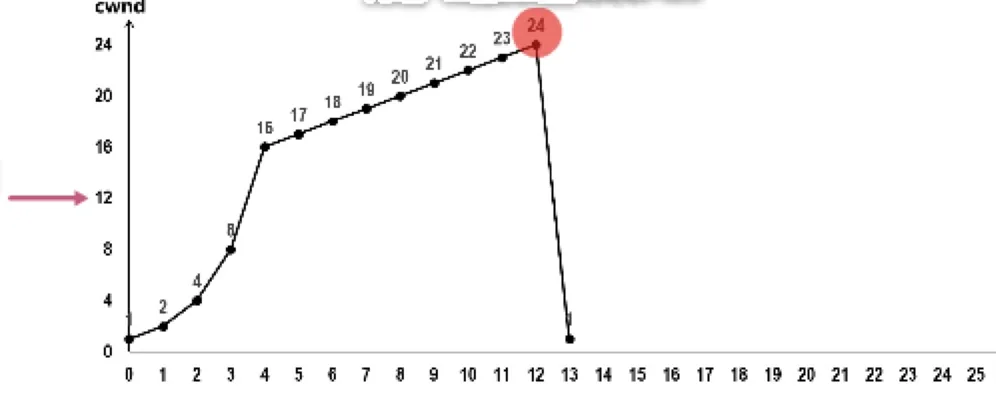
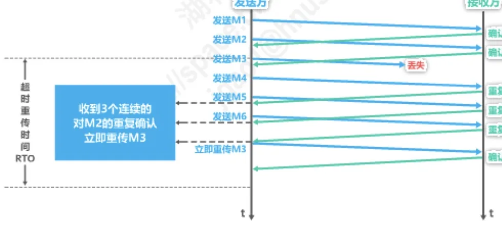
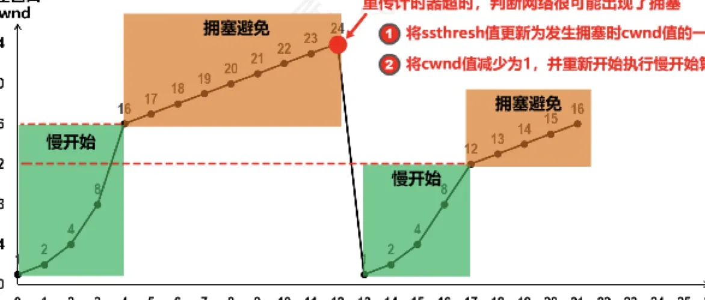
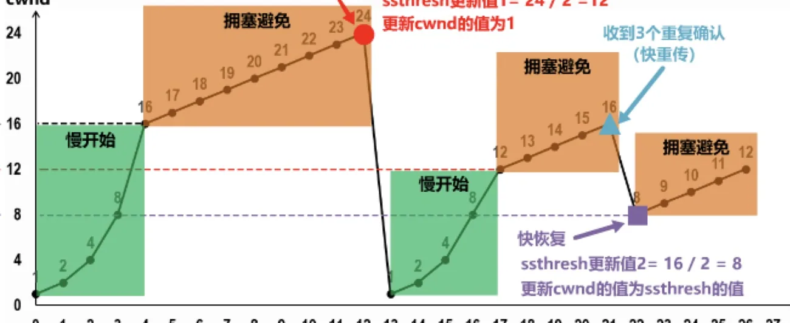
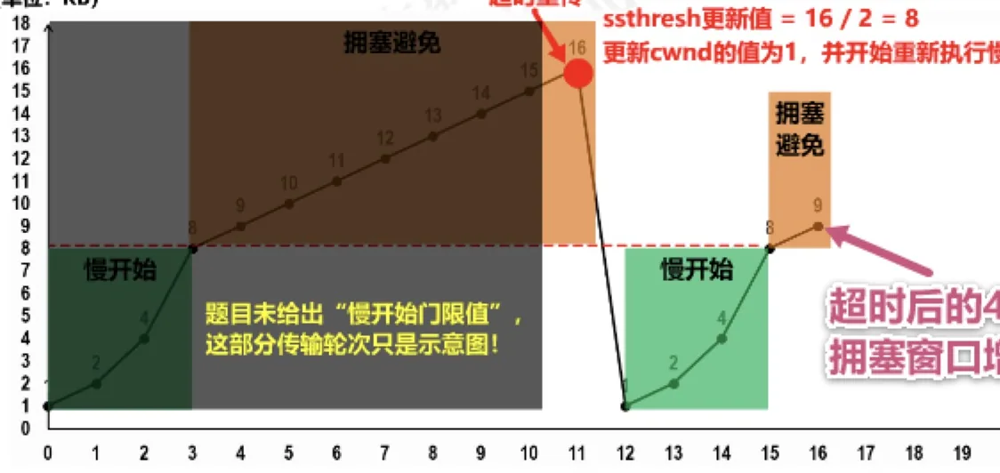

计算机通信与网络 · 第 5 章 运输层
5.5 TCP的拥塞控制
上一节的流量控制解决的是「接收方接不住」的问题，本节要解决另一个更棘手的对手：网络本身。当网络中的资源被过多的数据「压垮」时，传输性能会急剧恶化，甚至出现死锁。TCP 用四个算法来应对——慢开始、拥塞避免、快重传、快恢复。这一节篇幅较长，建议顺着「先认识拥塞窗口 cwnd 这个变量，再看它如何增长、如何回落」这条线索读下来。
1. 什么是拥塞
在某段时间，若对网络中某一资源的需求超过了该资源所能提供的可用部分，网络性能就要变坏，这种情况就叫做拥塞（congestion）。在计算机网络中，链路容量（即带宽）、交换结点中的缓存和处理机等，都是网络的资源；只要其中任何一处成为瓶颈，拥塞就可能发生。

图 1 中三条曲线的差别，正是拥塞控制的意义所在：
- 理想拥塞控制：吞吐量随输入负载上升，直到达到网络资源所能提供的极限才趋于平缓，网络被「用满但不堵」；
- 实际拥塞控制：输入负载较小时吞吐量近似线性增长，进入轻度拥塞后增长放缓，超过某一点（图中标为「拥塞！」）后吞吐量反而下降，说明网络已经拥塞；
- 无拥塞控制：若出现拥塞而不进行控制，整个网络的吞吐量将随输入负荷的增大而下降，最严重时会掉到 0，也就是发生死锁。
这里要把拥塞控制与流量控制区分清楚：流量控制针对的是发送方与接收方之间的速度匹配，拥塞控制针对的是整个网络的资源状况；前者是点对点的局部问题，后者是全局问题。发送方的发送窗口最终取两者的较小值，即 swnd = min(cwnd, rwnd)。
2. 拥塞控制的四种算法与讨论前提
TCP 的拥塞控制由四种算法组成：
- 慢开始（slow-start）——发送一开始不要把大量数据注入网络，而是由小到大逐步试探；
- 拥塞避免（congestion avoidance）——拥塞窗口较大时改为缓慢增长，使网络不容易出现拥塞；
- 快重传（fast retransmit）——让发送方尽早知道个别报文段丢失，尽快重传，而不必等超时；
- 快恢复（fast recovery）——收到重复确认时认为只是丢了个别报文段，不把拥塞窗口降到最小值，而是从一半开始继续。
为了把原理讲清楚，下面讨论这四种算法时假定三个条件：
- 数据是单方向传送的，而另一个方向只传送确认；
- 接收方总是有足够大的缓存空间，因而发送方发送窗口的大小由网络的拥塞程度来决定（也就是说，此时可以不考虑 5.4 节的流量控制，只看拥塞窗口）；
- 以最大报文段 MSS 的个数为讨论问题的单位，而不是以字节为单位。
另外还需要一个贯穿全节的度量单位：传输轮次。所谓一个传输轮次，指发送方把当前拥塞窗口允许发送的报文段全部发送出去、并收到它们的确认所经历的时间，它大致相当于一个往返时间 RTT。后面图中横轴的「传输轮次」就是这个含义。
3. 拥塞窗口 cwnd 与慢开始门限 ssthresh
拥塞控制的核心是发送方维护的一个状态变量——拥塞窗口 cwnd。它的值取决于网络的拥塞程度，并且动态变化。既然是动态的，就得有增有减的规矩：
- 拥塞窗口 cwnd 的维护原则：只要网络没有出现拥塞，拥塞窗口就再增大一些；但只要网络出现拥塞，拥塞窗口就减少一些。
- 判断出现网络拥塞的依据：没有按时收到应当到达的确认报文，即发生超时重传。
按本节的假定，接收方缓存足够大，于是发送方直接把拥塞窗口当作发送窗口使用：swnd = cwnd。也就是说，cwnd 是几个报文段，发送方一次就可以连发几个报文段。
此外，发送方还要维护一个慢开始门限 ssthresh 状态变量，它决定了当前该用哪种算法：
- 当
cwnd < ssthresh时，使用慢开始算法； - 当
cwnd > ssthresh时，停止使用慢开始算法而改用拥塞避免算法； - 当
cwnd = ssthresh时，既可使用慢开始算法，也可使用拥塞避免算法。
下面用一个完整的例子把这套机制走一遍。例子的参数是：ssthresh 的初始值为 16，cwnd 从 1 开始增长，图中的纵轴以 MSS 个数计。
4. 慢开始算法
慢开始的思路是：一开始先发送少量数据试探网络的承受能力，如果网络状况良好，再成倍地加大发送量。具体做法是：
- 发送方一开始把拥塞窗口 cwnd 设置为一个最大报文段 MSS 的数值（即 cwnd = 1）；
- 发送方发送第一个报文段（例子中编号为报文段 0），收到确认后把 cwnd 增大到 2；
- 再发送接下来的 2 个报文段（报文段 1～2），收到这 2 个确认后 cwnd 增大到 4；
- 依此类推：每收到一个对新报文段的确认，就把 cwnd 加 1；每经过一个传输轮次，cwnd 就翻一倍。
于是拥塞窗口按 1 → 2 → 4 → 8 → 16 的速度增长，每经过一个传输轮次就翻一番。当 cwnd 增长到 16，恰好等于慢开始门限 ssthresh，此时按规则可以停止慢开始、改用拥塞避免算法。
名称上有一点极易误解，原讲义特别提醒：「慢开始」是指一开始向网络注入的报文段少，并不是指拥塞窗口 cwnd 增长速度慢。恰恰相反，慢开始阶段的 cwnd 是按指数规律增长的，增长速度非常快。
5. 拥塞避免算法
当 cwnd 增长到 ssthresh（本例为 16）以后，如果继续翻倍，很快就会把网络压垮，所以要让 cwnd 的增长「减速」：每经过一个传输轮次，拥塞窗口 cwnd 只加 1。这样 cwnd 就按线性规律增长：16 → 17 → 18 → … → 24。
与慢开始一样，这里也有一处名不副实的地方：「拥塞避免」并非指完全能够避免拥塞，而是指在拥塞避免阶段将拥塞窗口控制为按线性规律增长，使网络比较不容易出现拥塞。网络最终还是会拥塞，关键在于拥塞发生后如何反应。
6. 出现拥塞时的处理
在本例中，当 cwnd 线性增长到 24 时，发送方发出了编号 171～194 的报文段，其中部分报文段丢失了。随之而来的是重传计时器超时。发送方由此判断网络很可能出现了拥塞，于是进行以下两项工作：
- 把慢开始门限 ssthresh 更新为发生拥塞时 cwnd 值的一半，即 ssthresh = 24 ÷ 2 = 12；
- 把拥塞窗口 cwnd 减少为 1，并重新开始执行慢开始算法。

这个「减半」的设计很有讲究：ssthresh 记下了上次拥塞时的「水位」的一半，作为新的安全阈值。此后 cwnd 从 1 重新开始翻倍增长，到接近 12 时再次放慢脚步，转入拥塞避免——如此往复，cwnd 便在「快速增长—线性增长—遇堵回落」之间循环，不断探测网络的可用容量。
7. 快重传算法
慢开始和拥塞避免是 1988 年提出的 TCP 拥塞控制算法（TCP Tahoe 版本）。1990 年又增加了两个新的拥塞控制算法来改进 TCP 的性能，这就是快重传和快恢复（TCP Reno 版本）。它们要解决的是这样一个问题：
- 有时，个别报文段会在网络中丢失，但实际上网络并未发生拥塞；
- 这将导致发送方超时重传，并误认为网络发生了拥塞；
- 发送方于是把拥塞窗口 cwnd 又设置为最小值 1，并错误地启动慢开始算法，因而降低了传输效率。
快重传的思路是：不等超时，而是让接收方用重复确认「报信」，使发送方尽早知道发生了个别报文段的丢失。它的要求有三条：
- 要求接收方不要等待自己发送数据时才进行捎带确认，而是要立即发送确认；
- 即使收到了失序的报文段，也要立即发出对已收到的报文段的重复确认；
- 发送方一旦收到三个连续的重复确认，就将相应的报文段立即重传，而不是等该报文段的超时重传计时器超时再重传。

图 4 中的过程值得逐帧看清：接收方收到 M1、M2 后正常确认；M3 丢失；随后到达的 M4、M5、M6 都是失序报文段，接收方对每一个都回送「对 M2 的重复确认」；发送方连续收到 3 个重复确认，立刻断定 M3 丢失，马上重传 M3，接收方收到后即可对后续数据继续确认。
这样一来，对于个别丢失的报文段，发送方不会出现超时重传，也就不会误认为出现了拥塞（进而把拥塞窗口 cwnd 降低为 1）。原讲义给出了一个量化的结论：使用快重传可以使整个网络的吞吐量提高约 20%。
8. 快恢复算法
快重传只回答了「怎么尽快重传」，还要回答「重传之后 cwnd 怎么办」，这就是快恢复算法：
- 发送方一旦收到 3 个重复确认，就知道现在只是丢失了个别的报文段。于是不启动慢开始算法，而执行快恢复算法；
- 发送方将慢开始门限 ssthresh 值和拥塞窗口 cwnd 值调整为当前窗口的一半，然后开始执行拥塞避免算法。
与超时重传的处理对比一下就清楚了：超时意味着「很可能真的拥塞了」，所以 cwnd 要从 1 重新慢开始；而 3 个重复确认说明数据还在流动，只是丢了个别报文段，所以 cwnd 只降到一半，直接进入拥塞避免，避免了从 1 开始重新爬升的巨大浪费。
原讲义还补充了快恢复的另一种实现：也有的快恢复实现是把快恢复开始时的拥塞窗口 cwnd 值再增大一些，即等于新的 ssthresh + 3。这样做的理由是：
- 既然发送方收到 3 个重复的确认，就表明有 3 个数据报文段已经离开了网络；
- 这 3 个报文段不再消耗网络资源，而是停留在接收方的接收缓存中；
- 可见现在网络中不是堆积了报文段，而是减少了 3 个报文段，因此可以适当把拥塞窗口扩大一些。
9. 完整的演变过程
把前面的内容串成一条时间线，就是图 5 与图 6。

图 5 是第一个循环：慢开始（1 → 2 → 4 → 8 → 16）、拥塞避免（17 → … → 24）、超时重传（ssthresh 更新为 12、cwnd 回到 1）、再慢开始（1 → 2 → 4 → 8 → 12）。图 6 则把第二个循环也画了出来，这次遇到的不是超时，而是 3 个重复确认。

对照两张图可以看出三个算法的分工：慢开始负责「从零起步时快速试探」，拥塞避免负责「接近上限时小心推进」，快重传与快恢复负责「偶发丢包时不要惊慌失措」。原讲义在图上还留了两条提醒，值得记牢：
- 「慢开始」是指一开始向网络注入的报文段少，并不是指拥塞窗口 cwnd 增长速度慢；
- 「拥塞避免」并非指完全能够避免拥塞，而是指在拥塞避免阶段将拥塞窗口控制为按线性规律增长，使网络比较不容易出现拥塞。
10. 原讲义中的一道真题
拥塞窗口的变化过程是常考内容，原讲义用 2009 年的一道真题做了示范。
【2009 年题 39】一个 TCP 连接总是以 1KB 的最大段长发送 TCP 段，发送方有足够多的数据要发送。当拥塞窗口为 16KB 时发生了超时，如果接下来的 4 个 RTT（往返时间）内的 TCP 段的传输都是成功的，那么当第 4 个 RTT 时间内发送的所有 TCP 段都得到肯定应答时，拥塞窗口大小是（ ）
A. 7KB B. 8KB C. 9KB D. 16KB
解析的起点是超时时的处理规则：发生超时即判断网络很可能出现拥塞，于是ssthresh 更新为发生拥塞时 cwnd 值的一半，即 16KB ÷ 2 = 8KB；同时cwnd 更新为 1，并开始重新执行慢开始算法。此后逐个 RTT 推算：
- 第 1 个 RTT：cwnd = 1KB，发送 1 个 TCP 段，全部被确认后 cwnd 变为 2KB；
- 第 2 个 RTT：cwnd = 2KB，收到 2 个确认后 cwnd 变为 4KB；
- 第 3 个 RTT：cwnd = 4KB，收到 4 个确认后 cwnd 变为 8KB，恰好等于更新后的 ssthresh；
- 第 4 个 RTT：cwnd = 8KB，此时转入拥塞避免算法，每经过一个传输轮次 cwnd 加 1，故这 8 个 TCP 段全部得到肯定应答后 cwnd 变为 9KB。

所以答案是 C（9KB）。原讲义在图旁还特别说明：题目并未给出「慢开始门限值」这一信息，图中超时之前的那部分传输轮次只是示意图，不影响计算结果。
本节小结
- 拥塞的定义：对网络中某一资源（链路带宽、交换结点缓存、处理机）的需求超过了该资源所能提供的可用部分；若不控制，吞吐量会随输入负荷增大而下降，最终因死锁降为 0。拥塞控制是针对整个网络的全局问题，流量控制是针对收发双方的局部问题。
- 发送方维护拥塞窗口 cwnd 与慢开始门限 ssthresh：
swnd = cwnd（缓存足够大时），无拥塞则增大、有拥塞则减小，判断拥塞的依据是发生超时重传；cwnd < ssthresh用慢开始，cwnd > ssthresh用拥塞避免，两者相等时任选。 - 慢开始：cwnd 初值为 1，每收到一个确认加 1，每经过一个传输轮次翻倍（1 → 2 → 4 → 8 → 16）；它的「慢」指初始注入的报文段少，不是增长慢。
- 拥塞避免：cwnd 按线性规律每轮加 1（16 → 17 → … → 24）；它并不能完全避免拥塞，只是让网络不容易拥塞。
- 超时重传即判定拥塞：ssthresh 更新为拥塞时 cwnd 的一半，cwnd 减少为 1，重新执行慢开始。
- 快重传与快恢复是 1990 年随 TCP Reno 增加的算法：接收方立即确认、对失序报文段发重复确认，发送方收到 3 个连续重复确认就立即重传；随后执行快恢复，把 ssthresh 与 cwnd 调整为当前窗口的一半（另一种实现取 ssthresh + 3），直接进入拥塞避免，从而避免把 cwnd 误降为 1。使用快重传可使整个网络的吞吐量提高约 20%。
- 拥塞窗口的增减依赖「确认是否按时到达」，而超时重传时间 RTO 的选择直接决定这个判断是否准确，这正是 5.6 节的内容。